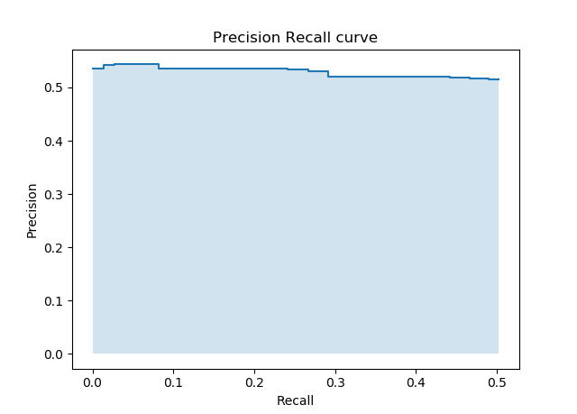
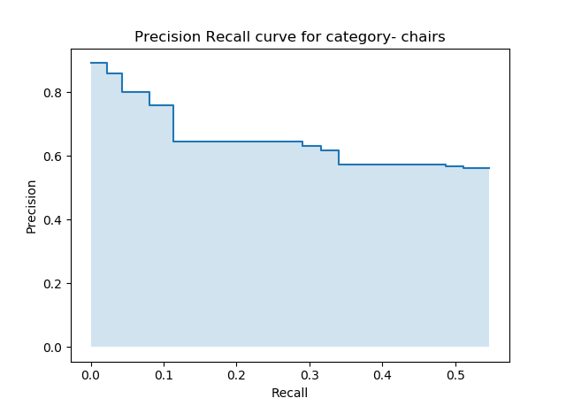
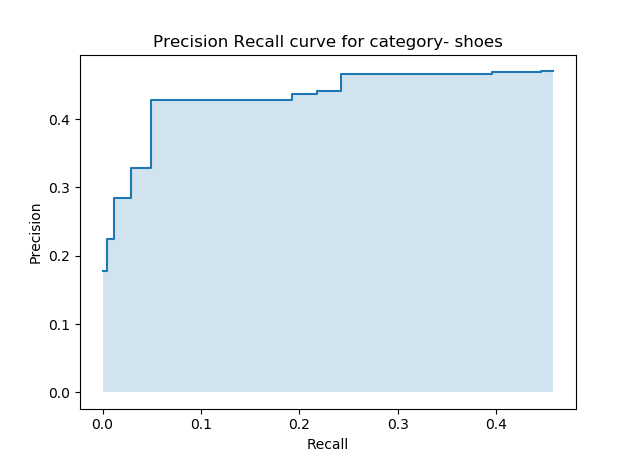
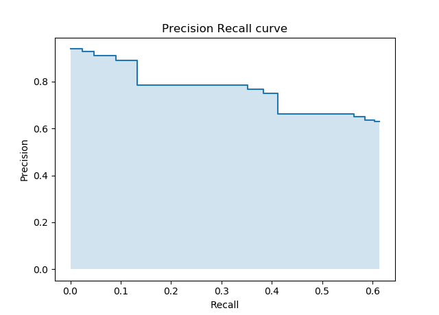
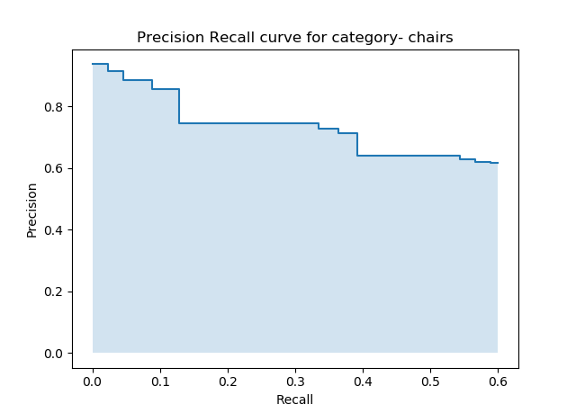
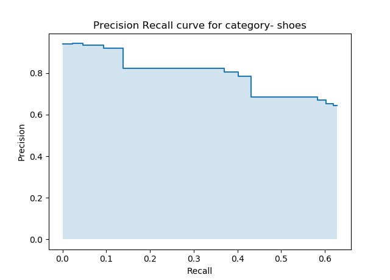
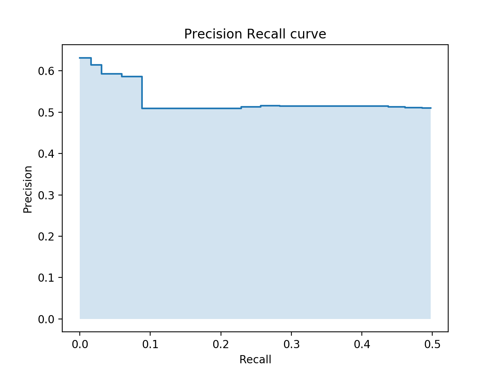
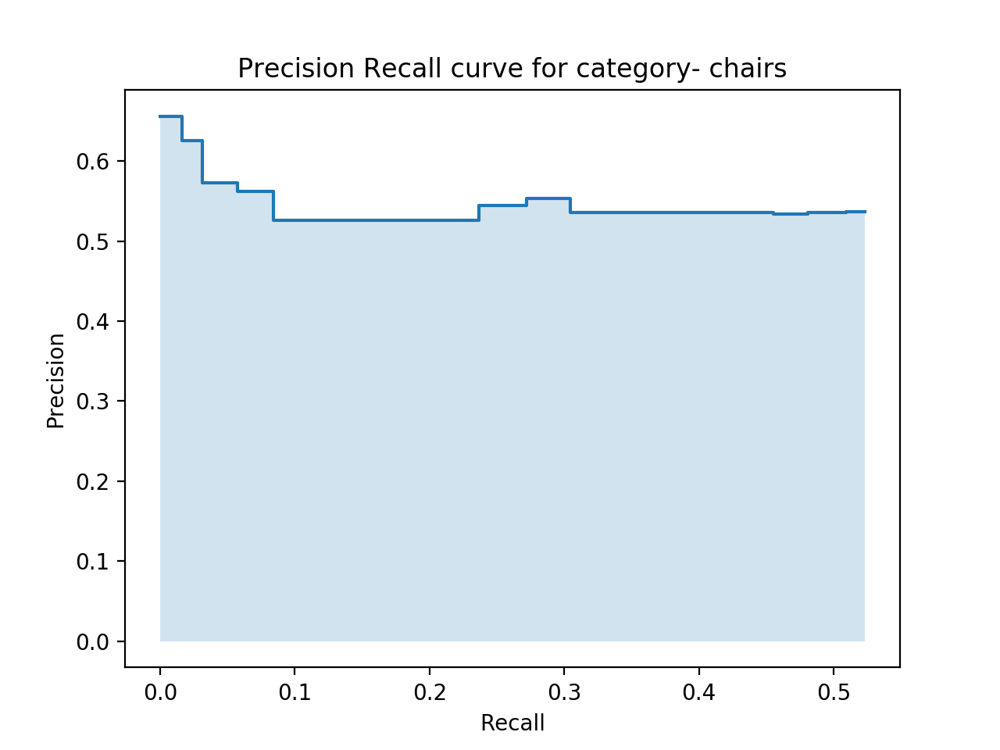
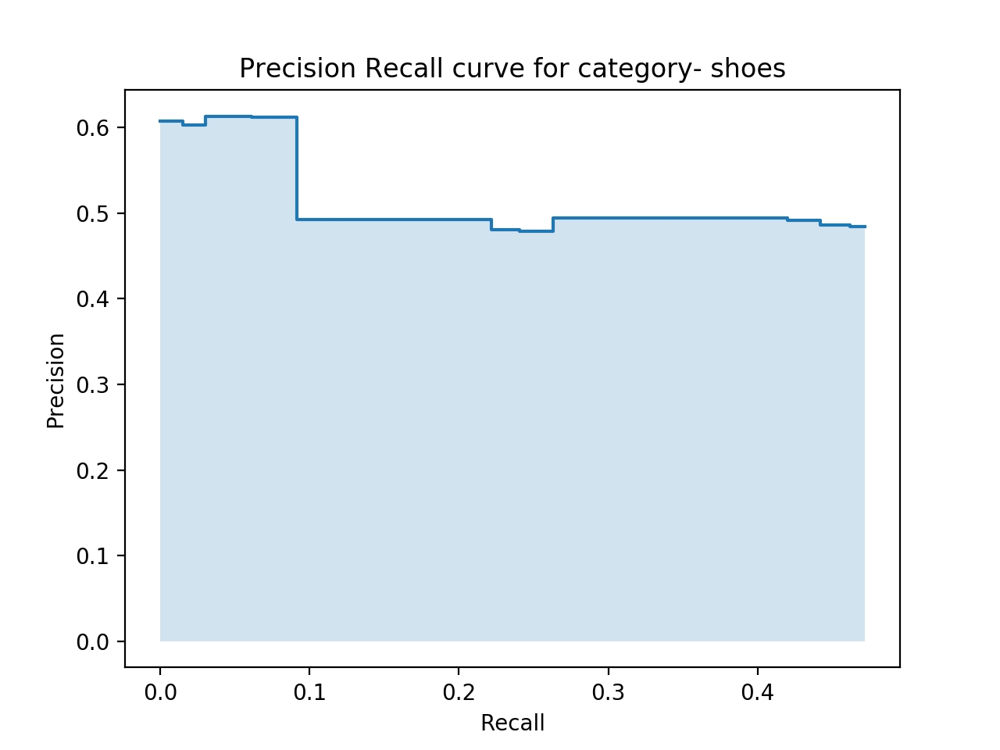

Sketch-Based Image Retrieval
Ramya Sree Boppana (903456349), Ang Deng (902989694), and Sanjana Garg (903475801)Fall 2019: CS 6476 Computer Vision: Class Project
Georgia Tech
Proposal
Abstract
Sketch based image retrieval systems have many applications in daily life like Medical diagnosis, digital library, search engines, crime prevention, photo sharing sites, geographical information, and sensing remote systems. The traditional text-based image retrieval systems are limited as with growing database of images it is difficult and unrealistic to annotate all the images for text-based search.In order to tackle this problem, we build a pipeline combining preprocessing the images (gray scaling edge extraction) and extracting various feature descriptors (SIFT, HOG, and Hu Moments) from the images. Then, we take the extracted features from a input sketch and fetch the most similar k images from the database based on distance metrics corresponding to each type of feature descriptors.
Based on the test dataset which contains images from two different categories split in 50/50 way, we were able to achieve above baseline (50%) accuracy from all three descriptors that we implemented. Our next step will be to try to tweak the parameters of these feature extractors and to try out strategies to combine the features in order to improve the overall performance.
Teaser Figure
Sample output from our application:
Introduction
The traditional text-based image retrieval systems are limited as with growing database of images it is difficult and unrealistic to annotate all the images for text-based search. Using sketch to retrieve images also alleviates the need for generating accurate captions for existing images, which becomes a complex natural language processing problem as the description is required to be more specific and detailed. Sketches have a much greater potential to describe the content and exact details of the image than plain text and are a more direct way of expressing human thoughts than text abstraction.Sketch based image retrieval systems have many applications in daily life like Medical diagnosis, digital library, search engines, crime prevention, photo sharing sites, geographical information, and sensing remote systems. With the increasing use of touch screen devices, Sketch-Based Image Retrieval (SBIR) has relevant applications in e-commerce platforms also.
Currently we are with regular RBG photographs, but the skeches are only black and white. We are not designing any new way to solve this problem, but building from scratch using knowledge we obtained from class lectures and reseaches.
Approach
In our approach, we aim to tackle the following aspects of sketch-image differences:- Visual Cue Imbalance: The sketches have a holistic shape and salient local shapes while the images are abundant in details on shape, texture, and color.
- Abstraction Gap: The sketches are usually simplified version (missing details) of images with random distortion (the randomness in strokes) and unrealistic disproportion (object parts being unrealistically smaller or bigger).

Pre-Processing Phase
In this phase, we pre-process the dataset to extract features. For every image in the dataset, we perform the following steps.Feature/Edge extraction
Convert the image to its gray intensity representation. Extract local edge or global shape features and encode them in a feature vector using representations like histogram. The histogram based features are efficient for similarity comparison and they can also tolerate random distortions in the sketches due to the grid division scheme in feature extraction. Edge/shape extraction addresses the visual cue imbalance. Since the sketches are generally composed of strokes which are mostly edges, it is intuitive to compare edge maps of images with sketches. This also addresses the simplification sub-aspect of the abstraction gap. Some of the feature extraction methods we have tried are described below.- HOG - Histogram of Oriented Gradients HOG encodes the distribution of directions of gradients (oriented gradients) as features. These features capture the local shape within an image which is a crucial information for SBIR as the query images are essentially texture less sketches that describe the shape of objects. Not only is the representation more compact, calculating a histogram over a patch makes this represenation more robust to noise. Individual graidents may have noise, but a histogram over 8×8 patch makes the representation much less sensitive to noise. 8×8 cells in a photo of a pedestrian scaled to 64×128 are big enough to capture interesting features The histogram is essentially a vector ( or an array ) of 9 bins ( numbers ) corresponding to angles 0, 20, 40, 60 … 160. the angles are between 0 and 180 degrees instead of 0 to 360 degrees. These are called “unsigned” gradients because a gradient and it’s negative are represented by the same numbers. In other words, a gradient arrow and the one 180 degrees opposite to it are considered the same as unsigned gradients work better than signed gradients if the angle is falling between 2 bins, it is distributed proportional to into both the bins. Each pixel contributes the weight(gradient magnitude) proportionally to the bins it's angle is falling between. to make it invariant to scale and lightning conditions, the 16*16 block is normalized by considering a window of size 32*32 which has 4 16*16 patches and these 4 hists of 9*1 are concatenated to a hist of size 36*1. And, this 32*32 window is moved along horizontally by 16 pixels and veritcally by 16 pixels making it to a total of 15*15 positions => 15*15*36= 8100 is the size of the feature vector. 65,536 => 8100
- SIFT The scale-invariant feature transform (SIFT), is a local feature descriptor. By searching for blobs at multiple scales and positions, the SIFT detector is invariant (or, more accurately, covariant) to translation, rotations, and re scaling of the image. We use Euclidean distance measure to compute similarity between sketches and images in database.
- Hu Moments Hu Moments generates descriptors based on the outer contours of an shape. It is invariant to translation, size and rotation. We consider this a global shape feature descriptor.
Retrieval Phase
This is the phase in which the query image is processed to retrieve similar images.- Feature extraction Similar to the feature extraction step of the pre-processing phase, we extract features from the input sketch image and form a feature vector.
- Similarity comparison
- L2 Norm L2 Norm/Euclidean distance metric is used to compare the features extracted using SIFT and Hu Moments.
- L1 Norm L1 Norm/Manhattan/Cityblock distance metric is used to compare the features extracted using HOG.
We chose the distance metrics as per [5] which says that Manhattan distance (L1 norm) may be preferable to Euclidean distance (L2 norm) for the case of high dimensional data. As described in the approach section above, HOG features' dimensions are significantly higher than that of SIFT and Hu Moments.
The top 'k' similar images from the above step are retrieved as output.
Experiments and Results
Experimental Setup
This dataset is organized into two categories of photos and sketches - shoe and chair and has a total of 1,432 sketch-photo pairs. Images and sketches are of the scale and orientation.
https://www.eecs.qmul.ac.uk/~qian/Project_cvpr16.html
We first start with the two category dataset Shoe for our problem, to test our features.
200 images of shoes and 200 images of chairs.
200 sketches of shoes and 200 sketches of chairs as query sketches.
Evaluation metrics
We will be evaluating the performance of our system (different descriptors and different parameters) using the below metrics.- Precision at k: For a given query sketch image, precision at k images (P@k) is (e.g., P@10 or "Precision at 10") corresponds to the number of relevant images among the top k images retrieved.
- Average Precision at k per category: We evaluate the performance of our system for each category of images in the dataset using this metric. Calculate P@k for each sketch image in the category and return the average of P@k scores.
- Average Precision at k per dataset: Every sketch image in the dataset as query image and return the average of P@k score for each query.
- Recall at k: For a given query sketch image, recall at k images (R@k) is (e.g., R@10 or "Recall at 10") corresponds to the fraction of the number of relevant images retrieved from the total relevant images.
- Average Recall at k per category: We evaluate the performance of our system for each category of images in the dataset using this metric. Calculate R@k for each sketch image in the category and return the average of R@k scores.
- Average Recall at k per dataset: Every sketch image in the dataset as query image and return the average of R@k score for each query.
Baseline
Since we have a 50/50 divide in the candidate images of the two catogories, the baseline of our approach will be 0.5.Comparing the three desriptors by average precision-recall plots
Here, by average we mean that we calculate the precision and recall values for each and all of the input sketches and then calculate the average performance. We provide the graphs both for over all and for each sketch input category.- SIFT
   - HOG
   - Hu Moments
  
Selecting Parameters
Since we have a 50/50 divide in the candidate images of the two catogories, the baseline of our approach will be 0.5.Qualitative results
Conclusion and future work
We will be evaluating the performance of our current implementation of framework and feature extractors (HOG, SIFT and Hu Moments) with The Sketchy Database which is the first large-scale collection of sketch-photo pairs. The dataset has 125 categories of objects with 100 images per category and 75,471 sketches of 12,500 objects. Unlike the shoe dataset, this database is benchmarked for fine-grained sketch-based image retrieval that is used to embed images and sketches of different scales and orientations in the same feature space using convolutional networks. Since the highly performing feature descriptor HOG is not rotation-scale invariant, we will try cascading the weak but rotation-scale invariant descriptors- SIFT, Hu Moments with HOG to improve performance with The Sketchy Database. Along with this, we may try options like query expansion discussed in the class, training ML/DL models like SVM/CNN with some/all of these featuresReferences/Citations
[1] Li, Y. & Li, W. Machine Vision and Applications (2018) 29: 1083. https://doi.org/10.1007/s00138-018-0953-8[2] M. Eitz, K. Hildebrand, T. Boubekeur and M. Alexa, "Sketch-Based Image Retrieval: Benchmark and Bag-of-Features Descriptors," in IEEE Transactions on Visualization and Computer Graphics, vol. 17, no. 11, pp. 1624-1636, Nov. 2011.
[3] Xiao, Changcheng & Wang, Changhu & Zhang, Liqing & Zhang, Lei. (2015). Sketch-based Image Retrieval via Shape Words. 571-574. 10.1145/2671188.2749360.
[4] C. Xiao, C. Wang, L. Zhang, and L. Zhang, “IdeaPanel,” in Proceedings of the 5th ACM on International Conference on Multimedia Retrieval-ICMR '15, pp. 667-668 (2015).
[5] Aggarwal C.C., Hinneburg A., Keim D.A. (2001) On the Surprising Behavior of Distance Metrics in High Dimensional Space. In: Van den Bussche J., Vianu V. (eds) Database Theory — ICDT 2001. ICDT 2001. Lecture Notes in Computer Science, vol 1973. Springer, Berlin, Heidelberg